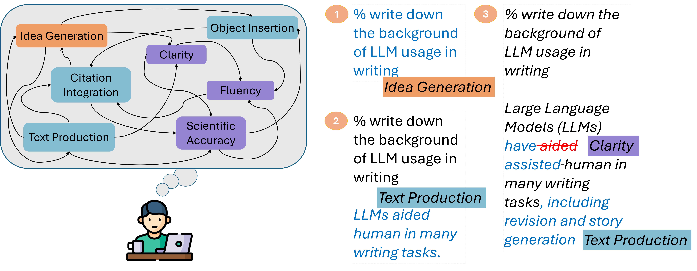

Research Contributions

- Scholarly writing is a non-linear and cognitively complex task that involves frequent switching between multiple activities, coordinating various pieces of multiform information, and revising previously written text. This approach contrasts with the token-by-token text generation of large language models (LLMs). Our goal is for the model to understand the cognitive processes involved in writing and apply them to text generation.
- We present ScholaWrite, a curated dataset of 63K LATEX-based keystrokes that were turned into publications in the computer science domain, annotated by experts in linguistics and computer science.
- We develop a taxonomy of scholarly writing intentions, providing an overall understanding of how scholars tend to produce their ideas.
- We found that a finetuned Llama3.2 model on our dataset outperformed GPT-4o in predicting the next writing intention and better mimicked the human-like iterative revision process than GPT-4o.